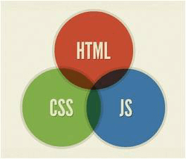
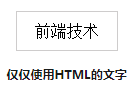
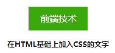
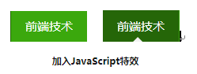
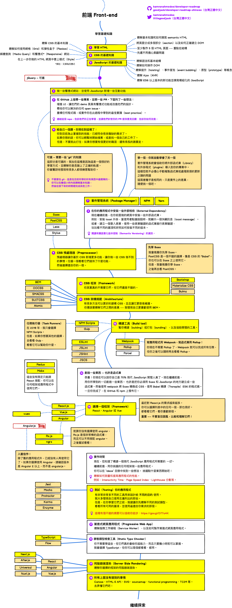

2. web前端介绍
web前端介绍¶
1、从网页制作到前端开发¶
1.1 web1.0时代的网页制作¶
网页制作是web1.0时代的产物，那个时候的网页主要是静态网页，所谓的静态网页就是没有与用户进行交互而仅仅供读者浏览的网页，例如一篇QQ日志、一篇博文等展示性文章。在web 1.0时代，用户能做的唯一一件事就是浏览这个网站的文字图片内容，这时用户也不能像现在在大多数网站都可以评论交流（缺乏交互性）。现在大多数人都听过“网页三剑客Dreamweaver+Fireworks+Flash”吧，这个组合就是web 1.0时代的产物。
网页三剑客指的是“Dreamweaver、Fireworks和Flash”。
1.2 web2.0时代的前端开发¶
“前端开发”是从“网页制作”演变而来的。
从2005年开始，互联网进入web 2.0时代，由单一的文字和图片组成的静态网页已经不能满足用户的需求，用户需要更好的体验。在web 2.0时代，网页有静态网页和动态网页。所谓动态网页，就是用户不仅仅可以浏览网页，还可以与服务器进行交互。举个例子，你登陆新浪微博，要输入账号密码，这个时候就需要服务器对你的账号和密码进行验证通过才行。
web2.0时代的网页不仅包含炫丽的动画、音频和视频，还可以让用户在网页中进行评论交流、上传和下载文件等（交互性）。这个时代的网页，如果是用“网页三剑客Dreamweaver+Fireworks+Flash”制作的，那是远远不能满足需求。现在网站开发无论是开发难度，还是开发方式上，都更接近传统的网站后台开发，所以现在不再叫“网页制作”，而是叫“web前端开发”。
所以，处于web2.0时代的你，如果要学习网站开发技术，就不要再相信所谓的“网页三剑客Dreamweaver+Fireworks+Flash”，因为这个组合已经是上个互联网时代的产物。而且这个组合开发出来的网站问题也非常多，例如代码冗余、网站维护困难（学习到后期，你会知道为什么不用这个组合了）。
2、前端技术¶
2.1 前端开发最核心技术¶

我们知道，用所谓的网页三剑客已经不能满足需求了，那前端开发究竟要学习什么技术呢？网页最主要由3部分组成：结构、表现和行为。网页现在新的标准是W3C，目前模式是HTML、CSS和JavaScript。
-
HTML是什么？ HTML，全称“Hyper Text Markup Language（超文本标记语言）”，简单来说，网页就是用HTML语言制作的。HTML是一门描述性语言，是一门非常容易入门的语言。
-
CSS CSS，全称“（层叠样式表）”。以后我们在别的地方看到“层叠样式表”、“CSS样式”，指的就是CSS。
-
JavaScript JavaScript是一门脚本语言。
2.2 HTML、CSS和JavaScript的区别¶
我们都知道前端技术最核心的是HTML、CSS和JavaScript这三种。但是这三者究竟是干嘛的呢？
“HTML是网页的结构，CSS是网页的外观，而JavaScript是页面的行为。”
给大家打个比喻。我们把前端开发的过程比喻成“建房子”，做一个网页就像盖一栋房子，先把房子结构建好（HTML）。建好房子之后给房子装修（CSS），例如往窗户安上窗帘、往地板铺上漂亮的瓷砖。最后呢，装修完了之后，当夜幕降临的时候，我们要开灯（JavaScript），这样才能看得见里面。现在大概懂了吧。
我们回到实际例子中去，看一下导航条。我们先分析一下“前端技术”这一栏目的具有以下基本特点：
- 导航条文字颜色是白色；
- 大小是14px
- 背景颜色是绿色；
- 鼠标移动到上面颜色会变成深绿色；
这些效果是怎么做出来的呢？其实思路就跟上面“建房子一样”。我们先用HTML搭建网页结构，这时候默认情况下，字体、字体颜色、字体大小和背景颜色如下图：

然后我们通过CSS修饰一下，改变其字体、字体大小、字体颜色和背景颜色，得到如下的效果图：

最后，我们通过JavaScript定义鼠标一个行为，就是鼠标移动到上面的时候，背景颜色会变为深绿色，效果如下：

现在大家都知道一个缤纷多彩的网页究竟是怎样做出来，也知道为什么“前端技术最核心的是HTML、CSS和JavaScript”了吧？
2.3 前端开发其他技术¶
前端技术最核心的是HTML、CSS和JavaScript，但是对于一个真正的前端工程师来说，哪怕你精通这三个，你也不能称为一个真正的“前端工程师”。因为前端技术除了HTML、CSS和JavaScript这三种，还需要学习Ajax、SEO等。
- Ajax
Ajax，即“Asynchronous Javascript And XML（异步JavaScript和XML）”，是指一种创建交互式网页应用的网页开发技术。
通过在后台与服务器进行少量数据交换，Ajax可以使网页实现异步更新。这意味着可以在不重新加载整个网页的情况下，对网页的某部分进行更新。传统的网页（不使用Ajax）如果需要更新内容，必须重载整个页面。
Ajax是前后端交互的技术，主要实现在前端。（不懂？！没关系，我们在Ajax教程中会讲解到）
- SEO
SEO，即“Search Engine Optimization（搜索引擎优化）”。SEO优化是专门利用搜索引擎的搜索规则来提高目前网站在有关搜索引擎内的自然排名的方式（国内常见的搜索引擎有百度、360、搜狗等）。
简单来说，你建好了网站并不代表你网站就能被搜索引擎搜索到，我们一般使用百度搜索资料时，搜索出来的网页有很多，但是我们一般看了搜索结果的第一、二页就不再往下看了。SEO，就是为了我们的网站能排在搜索结果的前面，这样你的网站才会有流量。你做网站，相信你也是想让你网站有更多人浏览的吧。
3. 后端技术¶
如果我们只学习完前端技术，其实也差不多可以开发属于自己的网站了。不过这个时候开发出来的网站是一个静态的网站，唯一的功能是供用户浏览，缺乏与用户的交互性，用户能做的东西不多。因此，如果我们要开发一个用户体验更好、功能更加强大的网站，就要学习一下后端技术。
那后端技术究竟是怎样的一门技术呢？举个简单的例子，很多大型网站都有注册功能，只有用户注册了之后才具有某种权限，例如你要使用QQ空间，你就要注册一个QQ才能使用。这样的功能就是后端技术所实现的。再有，淘宝网不是有很多商家吗？这些商家有各种各样的商品，这些庞大的数据只能使用后端技术中的数据库技术才能实现。
-
PHP
PHP是一种通用开源脚本语言。语法吸收了C语言、Java和Perl的特点，易于学习，使用广泛，主要适用于Web开发领域。 -
JSP
JSP技术有点类似ASP技术，它是在传统的网页HTML文件中插入Java程序段（Scriptlet）和JSP标记（tag），从而形成JSP文件。用JSP开发的web应用是跨平台的，既可以Windows系统下运行，也能在其他操作系统（如Linux）上运行。 -
ASP.NET
ASP.NET的前身就是我们常说的ASP技术。
以上三种都是动态网页技术，大家可以到这里详细了解一下：百度百科动态网页技术
很多人都以为“网站就是很多网页的集合”，其实这个理解是太恰当的。准确来说，应该是“网站是前端与后端的结合”。
4. 最新前端学习路线¶
随着前端项目的越来越复杂，当今前端技术也像后端技术一样向组件化模块化方向发展，基于MVVM模式的vue、react、angular框架的出现让前端组件化模块化更加完善；各种UI组件库的出现让前端开发变得越来越快速方便；预处理技术less、scss、stylus的出现更让css技术具备了模块化逻辑处理能力；在移动互联网时代，跨平台开发小程序、android、ios也成为前端必备技能；如果你想同时进行后端开发成为全栈工程师，基于javascript语言的nodejs平台技术是你的首先方案。 下图为前端最新学习路线图谱:


5. 总结¶
-
从web1.0到web2.0，网页制作已经变为前端开发了。现在对于前端开发，你要学的不是什么“网页三剑客”，而是“HTML+CSS+JavaScript”；
-
前端技术核心元素的是HTML、CSS和JavaScript，但是我们还要学习一些Ajax、SEO知识；
-
前端技术只能开发静态网页，而进一步学习了后端技术，你能开发一个用户交互性更好、功能更加强大的网站；
-
后端技术有nodejs、mysql数据库等；
-
学习路线：HTML入门→CSS入门→HTML进阶→CSS进阶→JavaScript入门→jQuery入门→Nodejs（koa2框架 +EJS模板）→Ajax→vue→react→angular→webpack→SCSS(LESS) → 跨平台技术(小程序)；